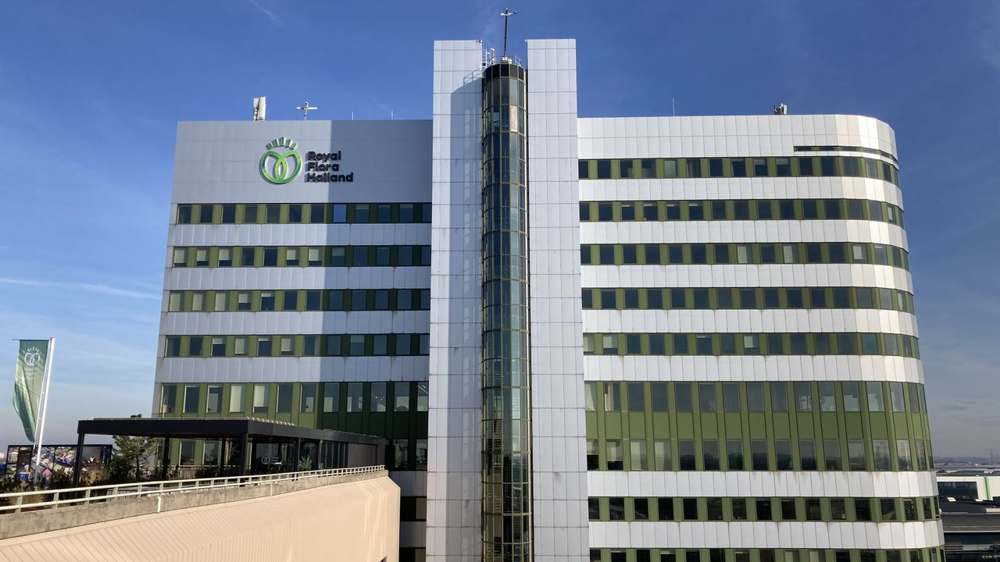
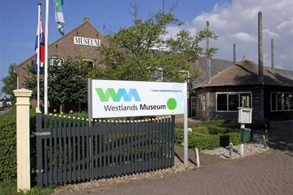

- Honselersdijk wordt in het Westland vaak Honsel genoemnd.
- De plaats Honselersdijk ontstond als een dijkdorp op de zuidelijke Ganteldijk, met de Dijkweg en de Endeldijk als hoofdas.
- In de dertiende eeuw behoorde het gebied tot de parochie van Naaldwijk.
- Het kerkje verdween maar sinds de late middeleeuwen stond er een kapel.
- Het aantal inwoners in 1844 in Honselersdijk was ruim 1000 en het telde 126 huizen. De belangrijkste sectoren waren landbouw, veeteelt en tuinbouw.
Bekijk miljoenen bloemen
In ons handelscentrum, een unieke tuinbouwkundige 'must-see' in de wereld. Wanneer je Amsterdam bezoekt, maak dan zeker een uitstapje naar deze buitengewone plek in Honselersdijk. Elk jaar doen duizenden (inter)nationale bezoekers de rondleiding door onze wereldwijde sierteeltmarktplaats. Loop zelf rond of bezoek de sierteeltmarktplaats onder begeleiding van een professionele gids.
Bron: Royal Flora Holland
Ontdek Honselersdijk
 Honselersdijk is vooral bekend als het dorp waar de bloemenveiling van Royal Flora Holland staat. Hier wordt elke dag bloemen, potplanten, groenten en fruit van Westlandse tuinders geveild en verscheept naar binnen en buitenland. Je vindt er ook het Westlands Museum, waar de rijke geschiedenis van het Westland en de glastuinbouw bewaard en gedeeld wordt.
Bron: Bezoek Westland